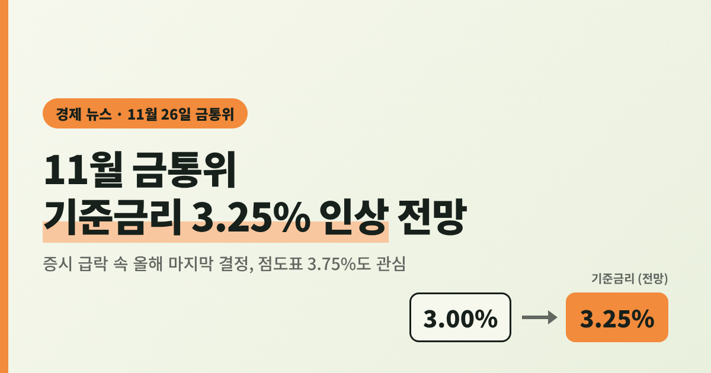
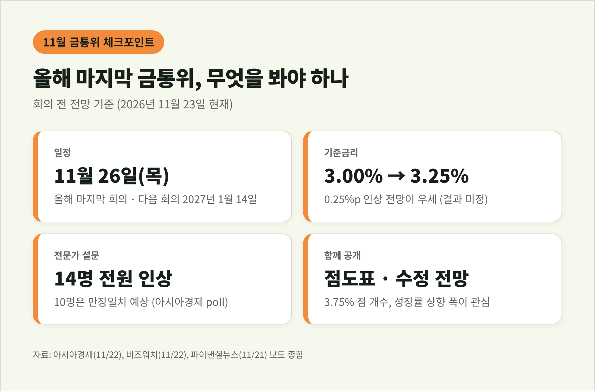
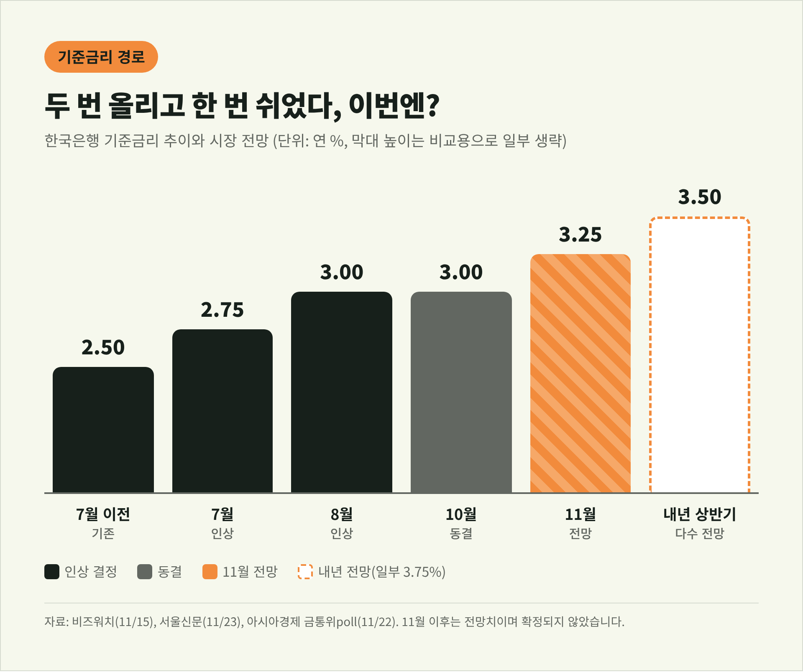
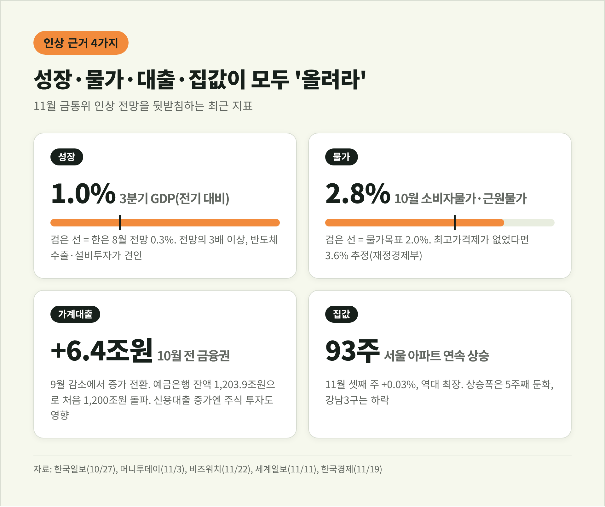
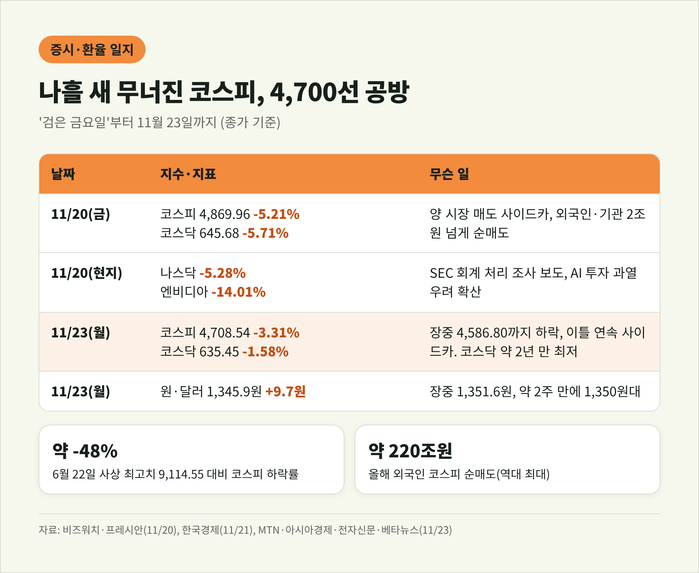
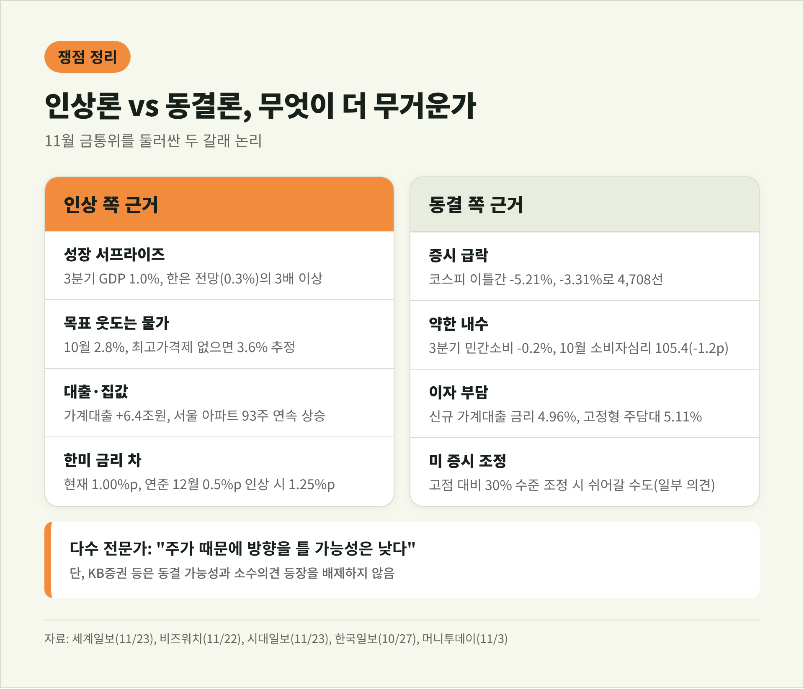
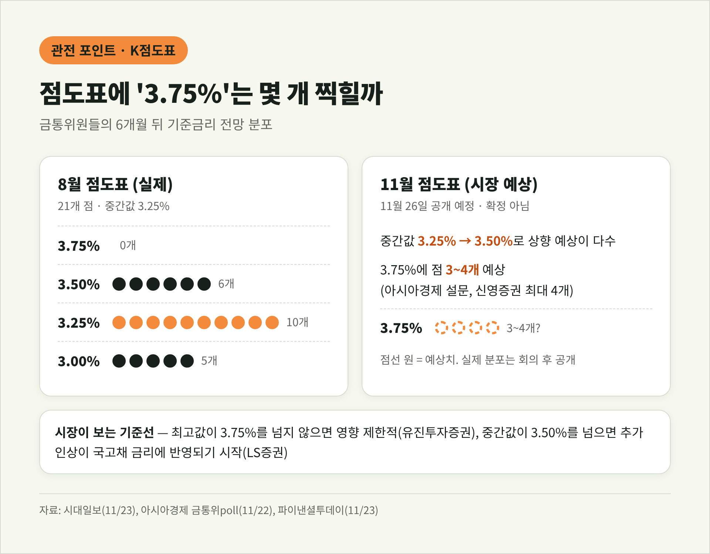

11월 금통위 기준금리 3.25% 인상 전망, 증시 급락에도 올릴까

이번 글에서는 11월 26일(목) 열리는 한국은행 금융통화위원회(금통위)를 앞두고, 기준금리 인상 전망이 왜 우세한지 정리해 보겠습니다.
코스피가 이틀 사이 크게 무너진 상황이라 "지금 올려도 되느냐"는 물음도 함께 짚습니다.
회의는 아직 열리지 않았습니다. 아래 내용은 모두 결과가 아니라 전망입니다.
세 줄 요약
- 시장은 11월 금통위에서 기준금리를 연 3.00%에서 3.25%로 0.25%포인트 올릴 것으로 보고 있습니다. 아시아경제 설문에서는 전문가 14명 전원이 인상을 예상했습니다.
- 근거는 3분기 '깜짝 성장'(전기 대비 1.0%), 2%를 웃도는 물가(10월 2.8%), 다시 늘어난 가계대출, 1%포인트로 벌어진 한미 금리 차입니다.
- 변수는 증시입니다. 코스피는 11월 20일 5.21%, 23일 3.31% 떨어져 4,708선까지 밀렸습니다. 금리 결정과 함께 공개될 점도표에서 3.75%가 몇 개 나올지도 관전 포인트입니다.

■ 무슨 일이 있나: 올해 마지막 금통위
한국은행 금통위는 11월 26일 올해 마지막 통화정책방향 결정회의를 엽니다.
다음 회의는 2027년 1월 14일입니다. 이번 결정이 올해의 금리를 마무리하는 셈입니다.
지금 기준금리는 연 3.00%입니다.
한은은 7월에 2.50%에서 2.75%로, 8월에 다시 3.00%로 두 달 연속 금리를 올렸습니다.
10월 22일에는 금통위원 7명 전원 일치로 동결하며 한 박자 쉬었습니다.
신현송 한은 총재는 10월 기자간담회에서 "3분기 GDP와 10월 물가를 확인한 뒤" 추가 인상 시기와 속도를 판단하겠다고 밝혔습니다.
두 지표는 이미 나왔습니다. 그리고 두 지표 모두 인상 쪽에 힘을 싣는 숫자였습니다.
이번 회의가 유독 주목받는 이유는 하나 더 있습니다.
한은은 이날 금리 결정과 함께 수정 경제전망과 금통위원들의 6개월 뒤 금리 전망, 이른바 'K점도표'를 공개합니다.
금리 한 번의 결정보다, 앞으로 금리가 어디까지 갈지를 가늠할 단서가 함께 나오는 날입니다.

■ 시장의 예상: "0.25%포인트 인상" 쪽으로 쏠렸다
전망은 한쪽으로 크게 기울어 있습니다.
아시아경제가 11월 16~19일 국내외 경제전문가 14명에게 물은 결과, 14명 전원이 3.00%에서 3.25%로 0.25%포인트 인상을 예상했습니다.
이 가운데 10명(71.4%)은 만장일치를, 3명은 소수의견 1명을 점쳤습니다.
증권가도 비슷합니다.
신한투자증권은 만장일치 인상을 예상했고, 신영·유안타·LS·흥국증권도 3.25%를 제시했습니다.
해외에서는 모건스탠리가 11월 3.25%, 2027년 1분기 최종금리 3.50%를 내다봤습니다.
그다음 경로에 대한 시각도 대체로 모입니다.
아시아경제 설문에서 다음 인상 시기로는 내년 2월(9명)이 가장 많았습니다.
내년 상반기 말 금리는 13명이 3.50%로 봤습니다.
다만 JP모건 박석길 이코노미스트는 2월과 5월 두 차례 인상해 3.75%까지 갈 수 있다고 전망했습니다. 삼성증권도 최종금리를 3.75%로 예상했습니다.
정리하면 시장의 기본 그림은 "11월 3.25%, 내년 상반기 3.50%에서 마무리"입니다.
3.75%는 소수 의견이지만, 결코 무시할 수 없는 꼬리 위험으로 남아 있습니다.
■ 왜 올리려 하나 ① 예상을 세 배 넘은 성장
첫 번째 근거는 성장입니다.
3분기 실질 GDP는 전기 대비 1.0% 늘었습니다.
한은이 8월에 내놓은 전망치 0.3%의 세 배가 넘습니다. 전년 동기 대비로는 3.4% 성장입니다.
성장을 이끈 것은 반도체였습니다.
수출이 2.3%, 반도체 제조용 기계를 중심으로 설비투자가 4.1% 늘었습니다.
건강보험 급여비 등 정부소비도 1.9% 증가했습니다.
반도체 가격 상승으로 교역조건이 좋아지면서 실질 국내총소득(GDI)은 전년 동기 대비 18.8% 늘었습니다. 1977년 4분기 이후 약 49년 만의 최고치입니다.
전망기관들도 숫자를 고쳐 쓰고 있습니다.
한은의 8월 전망은 올해 3.3%, 내년 2.9%였습니다.
그사이 IMF는 올해 전망을 3.9%로, KDI는 3.8%로 올렸습니다.
증권가는 한은이 이번에 올해 성장률을 3%대 후반, 내년을 3%대 중반으로 상향할 것으로 봅니다.
노무라증권 박정우 이코노미스트는 "잠재성장률을 상당히 웃도는 성장세"가 이어지고 있다고 진단했습니다.
경기가 잠재 수준보다 빠르게 달리면 물가 압력도 따라오기 쉽습니다. 한은이 '선제 대응'을 말하는 이유입니다.

■ 왜 올리려 하나 ② 내려오지 않는 물가
두 번째 근거는 물가입니다.
10월 소비자물가는 1년 전보다 2.8% 올랐습니다. 8월 3.1%, 9월 2.9%에서 조금씩 내려왔지만, 물가안정목표 2%와는 거리가 있습니다.
석유류가 14.9% 뛰면서 전체 물가를 0.56%포인트 끌어올렸습니다.
눈여겨볼 대목이 있습니다.
정부는 석유제품 최고가격제가 10월 물가를 0.8%포인트 낮춘 것으로 추산합니다.
재정경제부 추정대로라면 이 제도가 없었을 경우 상승률은 3.6%였습니다.
겉으로 보이는 2.8%보다 실제 물가 압력이 더 크다는 뜻입니다.
식료품과 에너지를 뺀 근원물가도 2.8%입니다.
씨티은행 김진욱 이코노미스트는 "끈적한" 근원물가가 추가 긴축의 명분을 키운다고 봤습니다.
한은 역시 11월 물가가 2%대 후반을 이어갈 것으로 내다봤습니다.
■ 왜 올리려 하나 ③ 다시 늘어난 대출과 집값, 벌어진 한미 금리 차
세 번째는 금융안정입니다.
10월 전 금융권 가계대출은 6조4000억원 늘었습니다. 9월 2조2000억원 감소에서 한 달 만에 증가로 돌아섰습니다.
주택담보대출이 4조원, 신용대출이 1조2000억원 늘었습니다.
예금은행 가계대출 잔액은 1203조9000억원으로 처음 1200조원을 넘었습니다.
한은은 집단대출 확대와 함께 "개인 주식 투자 순매수"가 신용대출 증가에 영향을 줬다고 설명했습니다.
이른바 '빚투'가 다시 고개를 든 셈입니다.
집값도 아직 꺾이지 않았습니다.
한국부동산원 11월 셋째 주 조사에서 서울 아파트값은 0.03% 올라 93주 연속 상승, 역대 최장 기록을 새로 썼습니다.
다만 상승폭은 5주째 줄었고, 강남·서초·송파는 하락했습니다. 경기 남부는 주간 0.5~0.6%대 상승이 이어졌습니다.
과열은 식어가지만 불씨가 남아 있는 모습입니다.
밖에서는 미국이 압박합니다.
미국 연방기금금리는 3.75~4.00%로, 한국과의 차이는 상단 기준 1.00%포인트입니다.
한은 뉴욕사무소가 조사한 10개 투자은행은 모두 12월 연준의 추가 인상을 예상했습니다.
한은이 이번에 0.25%포인트를 올려도 연준이 12월에 0.5%포인트를 올리면 격차는 1.25%포인트로 벌어집니다.
우리은행 박형중 이코노미스트는 "미국이 12월 인상하면 동결은 무의미할 수 있다"는 취지로 말했습니다.
한은이 쉬어가면 금리 차가 더 벌어지고, 그만큼 원화와 자본 흐름에 부담이 쌓일 수 있다는 의미입니다.

■ 가장 큰 변수: '검은 금요일'과 4,700선 공방
이 모든 근거를 흔드는 것이 증시입니다.
11월 20일, 코스피는 5.21% 떨어진 4,869.96에 마감했습니다. 코스닥도 5.71% 급락했습니다.
두 시장 모두 매도 사이드카가 발동됐고, 시장은 이날을 '검은 금요일'이라 불렀습니다.
외국인과 기관이 합쳐 2조원 넘게 팔았고, 개인이 1조6000억원가량을 받아냈습니다.
삼성전자는 7.01%, SK하이닉스는 5.92% 떨어졌습니다.
같은 날 밤 뉴욕에서는 충격이 더 커졌습니다.
나스닥이 5.28%, S&P500이 3.70% 내렸고, 엔비디아는 미 증권거래위원회(SEC)의 회계 처리 조사 보도에 14.01% 폭락했습니다.
AI 인프라 투자가 과열됐다는 우려가 기술주 전반으로 번졌습니다.
주말을 지나 11월 23일, 코스피는 다시 3.31% 내린 4,708.54에 마감했습니다.
장중에는 4,586.80까지 밀렸고 이틀 연속 매도 사이드카가 걸렸습니다.
종가 기준 1월 13일 이후 최저치입니다.
코스닥은 635.45로 2024년 12월 이후 약 2년 만의 최저 수준까지 내려왔습니다.
6월 22일 기록한 사상 최고치 9,114.55와 비교하면 다섯 달 만에 약 48% 빠진 셈입니다.
이제 시장의 관심은 4,700선을 지킬 수 있느냐로 좁혀졌습니다.
키움증권 한지영 연구원은 하단을 4,200~4,300까지 열어둬야 한다고 분석했습니다.
환율도 출렁였습니다.
23일 원·달러 환율은 9.7원 오른 1,345.9원에 마감했고, 장중 1,351.6원까지 올라 약 2주 만에 1,350원대를 밟았습니다.
외국인은 7거래일 연속 유가증권시장에서 주식을 팔았습니다.

■ 쟁점: 주가가 금리 결정을 바꿀 수 있나
그렇다면 증시 급락이 한은의 손을 멈추게 할까요.
전문가 다수의 답은 "그럴 가능성은 크지 않다"입니다.
이화여대 석병훈 교수는 한은의 목표가 물가와 금융안정인 만큼 주식시장이 금리 결정에 영향을 줘선 안 된다고 봤습니다.
NH금융연구소 조영무 소장은 오히려 동결하면 시장이 한은의 상황 인식을 부정적으로 받아들일 것이라고 짚었습니다.
지금 쉬면 "한은도 경기를 걱정한다"는 신호로 읽혀 불안을 키울 수 있다는 논리입니다.
반대쪽 목소리도 있습니다.
KB증권 임재균 연구원은 인상을 예상하면서도, 주가 부진으로 가계 금융자산이 줄고 있어 동결 가능성을 배제하지 않았습니다. 인상하더라도 반대 의견을 내는 위원이 나올 것으로 봤습니다.
서울대 안동현 교수는 미국 증시가 고점 대비 30% 가량 빠지는 본격 조정으로 번지면 한 번 쉬는 것도 검토할 수 있다고 했습니다. 1987년 블랙먼데이 때의 '그린스펀 풋'을 선례로 들었습니다.
실물에서도 불안한 신호가 보입니다.
3분기 민간소비는 0.2% 줄었고, 10월 소비자심리지수는 105.4로 한 달 새 1.2포인트 내렸습니다.
반도체와 AI가 성장을 끌고 가지만 그 온기가 가계와 내수로는 잘 번지지 않는, 이른바 'K자형' 흐름입니다.
9월 신규 가계대출 평균금리는 4.96%, 고정형 주담대는 5.11%로 이미 5% 안팎입니다.
금리를 더 올리면 이자 부담이 넓은 계층으로 퍼질 수 있다는 우려가 10월 의사록에서도 나왔습니다.
결국 이번 결정은 "성장과 물가는 올리라고 하고, 증시와 소비는 잠시 멈추라고 하는" 상황에서 내려집니다.
인상 쪽의 근거가 훨씬 두텁지만, 반대 근거도 가볍지는 않습니다.
■ 관전 포인트: 점도표에 '3.75%'는 몇 개일까
금리 인상 자체가 시장 예상대로 나온다면, 시선은 점도표로 옮겨갑니다.
8월 점도표에서 금통위원들의 6개월 뒤 금리 전망 21개 점은 3.25%에 10개, 3.50%에 6개, 3.00%에 5개가 찍혔습니다. 중간값은 3.25%였습니다.
이번에는 더 매파적으로 바뀔 것이라는 예상이 많습니다.
아시아경제 설문에서는 중간값 3.50%, 3.75%에 점 3~4개가 찍힐 것이라는 관측이 나왔습니다.
이 숫자가 왜 중요한지는 시장 반응으로 설명됩니다.
유진투자증권 김지나 연구원은 시장이 이미 3.50%를 기본으로, 최대 3.75%까지 가정하고 있다고 봤습니다. 최고값이 3.75%를 넘지 않으면 영향은 제한적이라는 판단입니다.
LS증권 우혜영 연구원은 중간값이 3.50%를 넘어가면 국고채 금리에 추가 인상이 반영되기 시작할 것이라고 내다봤습니다.
함께 나오는 수정 경제전망도 같은 방향을 가리킬 가능성이 큽니다.
성장률과 근원물가 전망이 오르면, 내년 2월 전후 추가 인상 전망에 무게가 실릴 수 있습니다.
대출을 가진 가계라면 이 대목을 눈여겨볼 만합니다.
변동금리 대출의 기준이 되는 코픽스는 6월 3.05%에서 9월 3.43%로 이미 올랐습니다.
점도표가 높게 나올수록 대출금리가 내려올 시점은 그만큼 뒤로 밀린다고 보시는 편이 안전합니다.

■ 전망: 인상은 유력, 진짜 승부는 그다음
정리하면 이렇습니다.
11월 26일 금통위에서 기준금리가 3.25%로 오를 가능성은 높아 보입니다.
성장은 예상을 크게 넘었고, 물가는 목표를 웃돌며, 대출과 집값, 한미 금리 차까지 인상 쪽을 가리키고 있습니다.
증시 급락은 분명한 부담이지만, 다수 전문가는 한은이 주가 때문에 방향을 틀 가능성은 낮다고 봅니다.
남은 질문은 세 가지입니다.
만장일치일지, 소수의견이 나올지.
점도표에 3.75%가 몇 개 찍힐지.
그리고 12월 연준의 결정과 미국발 기술주 조정이 어디까지 이어질지입니다.
예전에는 '금리를 올리느냐 마느냐'가 관심이었습니다. 이번에는 '어디서 멈추느냐'가 더 중요한 질문입니다.
물론 결과는 회의가 끝나봐야 압니다.
미국 증시 충격이 이번 주 더 커진다면 시장의 전망도 달라질 수 있습니다.
끝으로 한 가지만 덧붙이겠습니다.
이번 금통위는 "올릴까"보다 "얼마나 더 올릴까"를 읽는 자리입니다.
숫자 하나보다 점도표의 분포와 총재의 말투에서 더 많은 것을 읽을 수 있을 것입니다.
이 글은 공개된 보도와 전문가 전망을 정리한 정보 제공용 해설이며, 특정 금융상품의 매수·매도나 투자를 권유하지 않습니다. 금리·증시 전망은 바뀔 수 있으니 투자와 대출 결정은 본인의 판단과 책임 아래 하시기 바랍니다.
참고자료
- 비즈워치 — 올해 마지막 금통위…금리인상 '마침표' 찍을까 (2026-11-22)
- 아시아경제 — [금통위poll]①11월 금리 인상…향후 관건은 "점도표 3.75%" (2026-11-22)
- 서울신문 — 기준금리 3.25%로 올릴 듯… 내년 성장 전망도 상향 유력 (2026-11-23)
- 시대일보 — 올해 마지막 금통위 26일 열린다…증권가, 추가 금리 인상 무게 (2026-11-23)
- 세계일보 — 물가·성장 견조… 증시 힘들어도 韓銀 금리 올릴 듯 (2026-11-23)
- 파이낸셜투데이 — 11월 금통위 만장일치 25bp↑ 전망 (2026-11-23)
- 파이낸셜뉴스 — 한은, 금리 인상으로 기울었나…내주 경제 핫이슈 (2026-11-21)
- 한국일보 — 3분기 GDP 1.0% '깜짝 성장' (2026-10-27)
- 한국일보 — 美 기준금리 동결했지만… 한은은 11월 추가 인상에 무게 (2026-10-29)
- 내외일보 — 한국은행, 기준금리 연 3.00%로 동결 (2026-10-22)
- 머니투데이 — 10월 소비자물가 상승률 2.8%…"최고가격제가 0.8%p 내려" (2026-11-03)
- 세계일보 — 은행권 가계대출 10월 6.4조 급증… 1200조 첫 돌파 (2026-11-11)
- 비즈워치 — 가계대출 다시 증가…이달 기준금리 인상 힘 받나 (2026-11-15)
- 한국경제 — 서울 아파트값 93주째 올라 최장 기록 경신 (2026-11-19)
- 비즈워치 — '검은 금요일' 코스피 4900선도 붕괴 (2026-11-20)
- 프레시안 — '검은 금요일'…코스피·코스닥 동시 5% 이상 급락 (2026-11-20)
- 한국경제 — 기술주 투매에 나스닥 5% 급락 (2026-11-21)
- MTN — 코스피, 4700선 턱걸이 마감…코스닥은 2년래 최저치 (2026-11-23)
- 아시아경제 — 4700대 턱걸이한 코스피… 3.3% 하락 마감 (2026-11-23)
- 전자신문 — 美 기술주 폭락에 한국 증시 직격탄…코스피 4700선 턱걸이 (2026-11-23)
- 서울신문 — 출렁이는 코스피… 가까스로 지킨 4700선 (2026-11-23)
- 베타뉴스 — 코스피 급락에 원화 약세…원·달러 환율 2주만에 장중 1350원대 (2026-11-23)